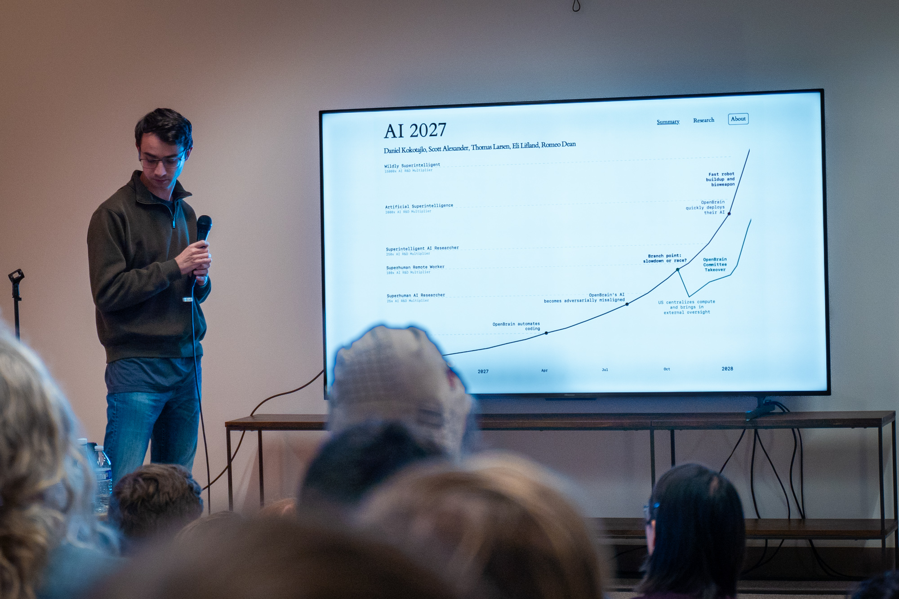
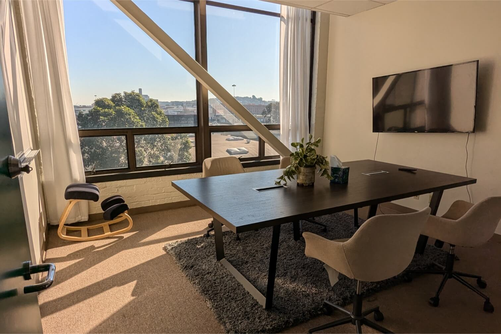
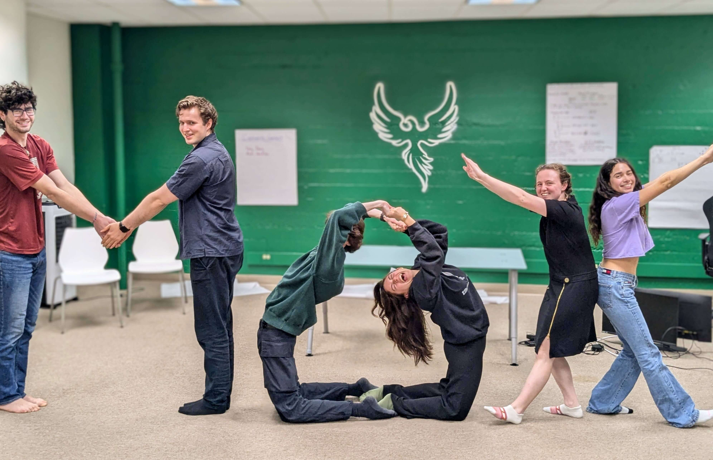

Your own work
Research, build a company, incubate a project, or collaborate with organizations around Mox.
Global Expert Fellowship
If you are outside the US and want your work closer to SF's people, pace, and collaborators, the Global Expert Fellowship is for you.
Start with the interest formRoom notes
Peers who move quickly and take ideas seriously.
Potential collaborators across research, startups, policy, and community building.
Member dinners, reading groups, talks, coworking days, and time to work.
What this is
We gather AI safety researchers, policy experts, founders, writers, builders, and community organizers in San Francisco. The Global Expert Fellowship helps people from outside the US spend focused time at Mox, where ideas can move quickly from conversation to collaborators, venues, demos, and next steps.
Research, build a company, incubate a project, or collaborate with organizations around Mox.
Fellows work from Mox at least three days in a typical week.
Mox supports and supervises your fellowship as your host organization and incubator.



Heard at Mox
“It feels like a second home, but more lively. I can always expect to run into a friend who is down to cowork or hang.”
“I can walk up to anyone and have an interesting conversation; every single person I’ve met here has welcomed questions about their work and been curious about mine.”
“It feels closer to going to the college library with friends than to an office.”
Good fit
Machine learning research, AI governance, biotech, biosecurity, entrepreneurship, fieldbuilding, animal welfare, and nearby frontier areas.
Share your side projects, prototypes, communities, papers, products, grants, public writing, or unusually useful things you have made.
Bring a six-month or year-long research, startup, or incubation plan that makes sense specifically at Mox.
How to apply
Tell us about your background, proudest work, and what you want to build or research here.
A short conversation about your plans, your context, and what time at Mox would help with.
If the fit is promising, we ask for the complete program proposal.
After acceptance, we help you move through the required visa sponsor and documentation steps.
The sponsor reviews your materials, then you schedule the consulate appointment for your visa. Timing depends on your country and situation.
Once everything is approved, you come to San Francisco and begin your fellowship at Mox.
Practical basics
The fellowship works best for people with specialized knowledge, a clear program of work, and enough flexibility to spend real time with the Mox community.
Expertise: specialized knowledge or skill relevant to Mox.
Presence: collaborate in person at Mox three or more days most weeks.
Progress: attend twice-monthly supervisor check-ins.
Costs: plan for your US living costs, sponsor fees, and Mox resident-tier membership.
Documents: prepare the financial, education, and activity-plan materials the process requires.
Timing
We accept applications on a rolling basis. Depending on your country and situation, candidates with documents ready have sometimes completed the process in about a week — but that is a possibility, not a promise. We only commit to dates with people who have started the process with us.
Helpful things to gather early: bank documentation, translated diploma or transcripts, and a clear weekly activity plan for your time at Mox.
Life at Mox
Settle in at your desk, write, code, read, or prepare for a collaborator meeting.
Meet researchers, founders, and organizers working across AI safety and frontier technology.
Use meeting rooms, call booths, office hours, and the ordinary helpfulness of people nearby.
Join member dinners, talks, reading groups, hackathons, demo days, or a quiet walk through SF.
Pilot program
Start with a short note. If there is a good fit, we will invite you to a conversation before asking for the full application.